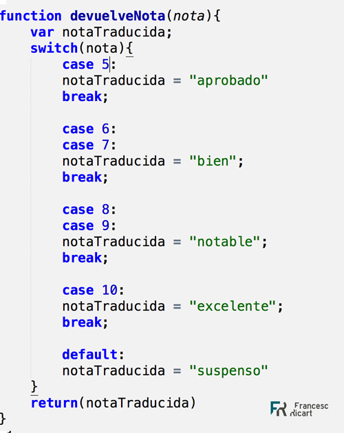

Los condicionales son una estructura de control esencial al momento de programar y aprender a programar. En la mayoría de los lenguajes de programación utilizados actualmente, nos permiten hacer uso de estas estructuras parea definir ciertas acciones condiciones especificas en nuestro algoritmo. Un condicional, permite establecer una serie de condiciones al interior de nuestro programa, que nos ayudan a determinar que acciones llevará cabo dadas ciertas circunstancias.
El condicional switch case es una estructura que evalúa más de un caso y se caracteriza por: Selección de una opción entre varias. Switch recibe un “caso” y lo evalúa hasta encontrar el caso que corresponda. Se puede usar la opción “default” para cuando no se encuentra el caso dado.
